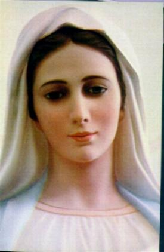

VISÕES NO PARAÍSO DIVINO

"NOSSO SENHOR concedeu a alma de Santa Francisca Romana o privilegio especial de ser conduzida diversas vezes a eternidade, onde apreciou o carinho dos Santos, a admirável organização e a impressionante beleza do Paraíso de DEUS, que descreveu ao seu Confessor Padre Giovanni Mattiotti, a fim de que fosse divulgado para toda humanidade".
= ÍNDICE =